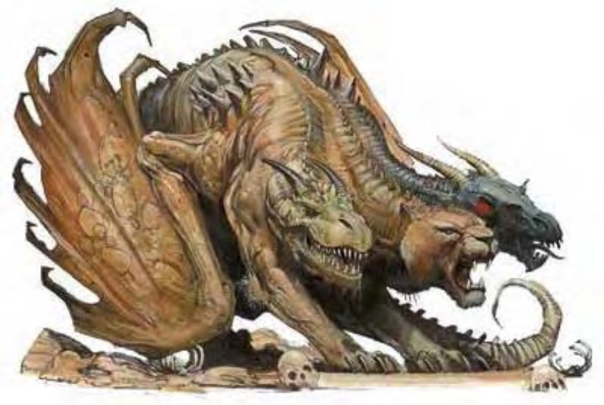

该生物有着大型山羊的后腿以及巨型狮子的前腿。它拥有巨龙的双翼以及三颗不同的头颅：分别来自长角的山羊、无鬃的狮子及凶猛的巨龙。
奇美拉是奇异的掠食者，拥有陆地与空中的行动能力。奇美拉可用其快速有力的爪子与尖牙击败最难缠的对手。奇美拉肩高约5英尺，身长超10英尺，重约4000磅。奇美拉的龙头可能是黑色、蓝色、绿色、红色或者白色。奇美拉会说龙语，但除了奉承比它们更强大的生物之外，它们根本懒得说。
| 资料栏位 | 奇美拉 (Chimera) 大型魔法兽 |
|---|---|
| 生命骰 | 9d10+27 (76hp) |
| 先攻 | +1 |
| 速度 | 30英尺 (6格)、飞行50英尺 (不良) |
| 防御等级 | 19 (-1体型、+1敏捷、+9天生)、接触10、措手不及18 |
| 基本攻击/擒抱 | +9 / +17 |
| 攻击 | 啮咬+12近战 (2d6+4) |
| 全力攻击 | 啮咬+12近战 (2d6+4) 以及 啮咬+12近战 (1d8+4) 以及 抵撞+12近战 (1d8+4) 以及 2爪抓+10近战 (1d6+2) |
| 占据/触及 | 10英尺 / 5英尺 |
| 特殊攻击 | 喷吐武器 |
| 特殊能力 | 黑暗视觉60尺、昏暗视觉、灵敏嗅觉 |
| 豁免 | 强韧+9、反射+7、意志+6 |
| 属性 | 力量19、敏捷13、体质17、智力4、感知13、魅力10 |
| 技能 | 躲藏+1*、聆听+9、侦察+9 |
| 专长 | 警觉、盘旋、钢铁意志、多重攻击 |
| 区域 | 温带山区 |
| 组织 | 单独、成群 (3-5) 或成群飞行 (6-13) |
| 挑战级数 | 7 |
| 宝物 | 标准 |
| 阵营 | 通常混乱邪恶 |
| 进化 | 10-13HD (大型) ; 14-27HD (超大型) |
| 等级调整 | +2 (部署) |
作为一名致命的敌人，奇美拉喜欢突袭猎物。它会经常从空中俯冲下来或者隐藏不动直到开始冲刺。它的龙头可以使用喷吐武器攻击来代替啮咬。数只奇美拉会协同作战。
喷吐武器 (Su)：奇美拉的喷吐武器如下面表格所述取决于它的龙头的颜色。无论它是哪种类型，奇美拉的喷吐武器可以每1d4轮使用一次，能造成3d8点伤害，对手通过DC17的反射豁免检定则伤害减半。该豁免DC基于体质调整值。要随机决定奇美拉头的颜色和喷吐武器时，请掷1d10并参考下表。
| 1d10 | 头的颜色 | 喷吐武器 |
|---|---|---|
| 1-2 | 黑色 | 40英尺直线强酸 |
| 3-4 | 蓝色 | 40英尺直线电击 |
| 5-6 | 绿色 | 20英尺锥形气体 (强酸) |
| 7-8 | 红色 | 20英尺锥形火焰 |
| 9-10 | 白色 | 20英尺锥形寒冷 |
技能：奇美拉的三个头在进行侦察和聆听检定时获得+2的种族加值。*在灌木丛林地带的奇美拉进行躲藏检定时获得+4的种族加值。
负重：奇美拉的轻载上限为348磅；中载为349-699磅；重载为700-1050磅。